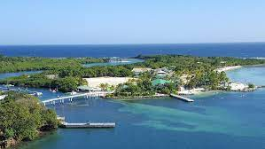

El territorio de Honduras es muy accidentado, lo forman altas filas de montañas, elevadas planicies, valles profundos en los que se encuentran llanos extensos y fértiles cruzados por ríos más o menos caudalosos y algunos navegables,16 todo lo cual contribuye a su rica biodiversidad.
 Honduras es un estado unitario y se autodefine como libre, soberano e independiente. Limita al norte y este con el mar Caribe, al sureste con Nicaragua, al sur con el golfo de Fonseca y El Salvador, y al oeste con Guatemala,9 en cuanto a los límites marítimos colinda con México, Belice, Cuba, Islas Caimán, Guatemala, Jamaica, Colombia, Nicaragua, y El Salvador.10 La extensión territorial de Honduras, comprendiendo todas sus islas, es de 112 492 km².1